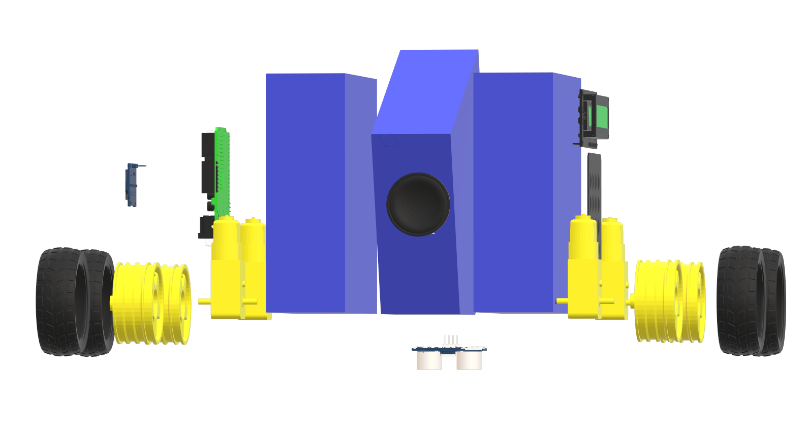

Ի՞նչ է PhysBot
Physbot-ը ռոբոտ է, որը նախատեսված է 9-16 տարեկան երեխաների, դպրոցների և ֆիզիկայով հետաքրքրված անձանց համար։ Դասասենյակների՝ շատ հաճախ չտրամադրող միջավայրի պատճառով աշակերտները ամբողջությամբ չեն ներգրավվում դասապրոցեսին՝ հատկապես, երբ խոսքը վերաբերում է այնպիսի դժվար առարկայի, ինչպիսին ֆիզիկան է։ Physbot-ը այս խնդրի ամենաճիշտ լուծումն է։ Ռոբոտը կդառնա ցանկացածիս ամենամոտ ընկերը, ով ֆիզիկայով հետաքրքրված է՝ ցուցադրելով փոքրիկ անիմացիաներ, յուրաքանչյուրի համար ստեղծելով իր անհատական ուղին, բերելով օրինակներ և վերջի վերջո, օգտագործելով խոսելու ունակությունը, մեր ռոբոտը ֆիզիկայի դասերը կներկայացնի հակիճ, և, որ ամենակարևորն է՝ մատչելի ձևով։

Ո՞րն է գաղափարի հիմնական նպատակը։ Ի՞նչ խնդիրներ կլուծի այն։
Physbot-ը նպատակ ունի երեխաների մոտ ֆիզիկայի հանդեպ հետաքրքրություն առաջացնել, ֆիզիկան ներկայացնել ավելի պարզ և մատչելի։ Այն ֆիզիկան ներկայացնելու է ոչ ստանդարտ մեթոդներով , այդպիսով հետաքրքրություն առաջացնելով ֆիզիկայի հանդեպ։Այն կարողանալու է յուրաքանչյու երեխայի համար կազմել անհատական պլան և ուսուցումն շարունակել ըստ այդ պլանի։ Ռոբոտն ունենալու է նաև կայքէջ որտեղ երեխաններն կարող են տալ իրենց բոլոր անհասկանլի հարցերն։ Ռոբոտն ամեն ինչ բացատրելու է հստակ և հակիրճ, բայց միևնույն ժամանակ մաքսիմալ մատչելի ու հասկանալի։

Ինչ կարող է անել ռոբոտը։
Teacher Collaboration
PhysBot collaborates with teachers to create an engaging and visually appealing learning environment. The robot's charming visuals and interactive features captivate students' attention.
Inclusive Learning Environment
PhysBot fosters inclusivity with its vibrant and welcoming design. The website provides a user-friendly interface where children can explore physics in a supportive and interactive way.
Inspiring Future Innovators
PhysBot inspires future innovators through its adorable visuals and captivating content. The robot motivates children to explore the wonders of physics and pursue scientific discovery.